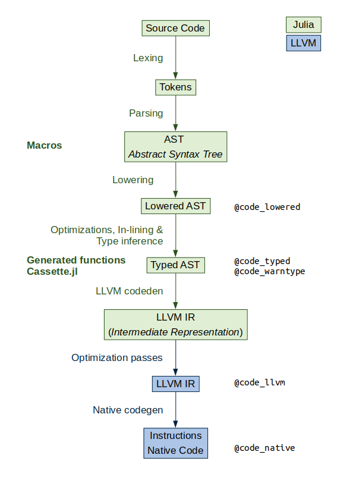

How Julia works?


Type system
Until now, we have not used type annotations, but Julia has a rich type system. Julia is an optionally- and dynamically-typed programming language. That means that you can change the type of a variable...
a = 10
typeof(a)Int64a = true
typeof(a)Bool... and that type annotations are optional. You can use type annotations to:
- make a program more robust (type checking)
a::Bool # type assertiontruea::Int- optimize code by giving a hint to the compiler
- documment the code and use multiple dispatch
# function_name(arg::ArgumentType)::ReturnType = function_body
first_character(str::AbstractString)::Char = str[1]first_character (generic function with 1 method)character = first_character("ABC")'A': ASCII/Unicode U+0041 (category Lu: Letter, uppercase)character = first_character(10_000)Type hierarchy
Any Julia object has a type that belongs to a fully connected type graph. There are abstract and concrete types. Concrete types are final, i.e. they cannot have subtypes, while abstract types can have multiple subtypes but only one supertype.
using JuliaForBioinformatics
show_type_tree(Number)Any
Number
Complex
Real
AbstractFloat
BigFloat
Float16
Float32
Float64
AbstractIrrational
Irrational
Integer
Bool
Signed
BigInt
Int128
Int16
Int32
Int64
Int8
Unsigned
UInt128
UInt16
UInt32
UInt64
UInt8
Rational
StatsBase.TestStatIn Julia, all values are instances of the abstract type Any.
The functions supertype and subtypes are useful to navegate the type graph.
supertype(Real)Numbersubtypes(Real)You can use isa to test if an object is of a given type
isa("I'm a string", String)trueAnd the subtype operator <: to test if a type is a subtype of another
String <: AbstractStringtrueYou can also use Union of types, for example, if the possible types don't share a meaningful supertype
String <: Union{AbstractString, AbstractChar}trueMultiple dispatch
We can define multiple methods for a function by using different method signatures by indicating the argument types using :: or <:.
For example we are going to define 3 methods for the function say_my_type:
say_my_type(x) = println(x, " is a ", typeof(x))
# say_my_type(x) is the same that say_my_type(x::Any)
say_my_type(x::Real) = println(x, " is a Real number of type ", typeof(x))
say_my_type(x::Float64) = println(x, " is a Float64 number")say_my_type (generic function with 3 methods)When the function is called, Julia selects the method with the most specific method signature.
say_my_type('A') # 'A' is a Char, a subtype of Any
say_my_type(2) # 2 is an Int, a subtype of Real
say_my_type(2.0)A is a Char
2 is a Real number of type Int64
2.0 is a Float64 numbersay_my_type(x::Real) can also be written using the where keyword as
say_my_type(x::T) where {T <: Real} = println(x, " is a Real number of type ", T)say_my_type (generic function with 3 methods)Parametric types
Julia types can have parameters. We have already used parametric types, one of them is Array:
cube = zeros(Int, 3, 3, 3)
typeof(cube)Array{Int64,3}Julia Arrays take two parameters, the type of the elements stored in the array and the array dimensions.
This allows to write specific methods depending on those parameters
say_my_type(x::Array{T, 1}) where {T} = println(x, " is vector with ", T, " elements")
say_my_type(x::Array{T, 2}) where {T} = println(x, " is matrix with ", T, " elements")say_my_type (generic function with 5 methods)say_my_type(Rational[0.5, 1, 1.5])
say_my_type(Float64[1 3 5; 2 4 6])Rational[1//2, 1//1, 3//2] is vector with Rational elements
[1.0 3.0 5.0; 2.0 4.0 6.0] is matrix with Float64 elementsExercise 1
Add a method to say_my_type that prints the number of unique values of an array of characters or strings and its dimensions.
# ... text array with ... dimensions and ... unique values ...Which method is being used?
You can use the @which macro to ask Julia which particular method is being used
@which say_my_type(2 + 0im)@which say_my_type(2.0)Julia compiler
Julia uses Just-in-time (JIT) compilation to achieve close to C performance. After selecting the most specific method, Julia (generally) compiles the method for the particular argument types.
Because of that, the first time a function is called, it is compiled (slow). If you call the same function a second time with the same argument types, it will use the already compiled code (fast).
@time sum(1:10_000)50005000@time sum(1:10_000)50005000While compilation times can be annoying sometimes, this mechanism allows Julia generality, composability and its capacity to generate efficient code for user-defined types. That's mean that you do not need to use built-in types or functions or to code some parts in C/Fortran to get a good performance like in other high-level languages.
Also, Julia represents its own code as a Julia data structure. This allows a program to transform and generate its own code, using macros and generated functions, for example, and powerful reflection capabilities to explore the internals of a program. You can read the metaprogramming section of the manual to learn more about this topic.

function sum_numbers(vector)
total = 0
for value in vector
total += value
end
total
endsum_numbers (generic function with 1 method)To avoid performance issues for using a global variable we are going to define it as a constant using the const keyword.
const rand_vector = rand(5)5-element Array{Float64,1}:
0.8602589418802822
0.9346126171981428
0.9645888538576246
0.08155980740845692
0.8703084387945312 @code_lowered sum_numbers(rand_vector)@code_typed sum_numbers(rand_vector)@code_warntype sum_numbers(rand_vector)@code_llvm sum_numbers(rand_vector)@code_native sum_numbers(rand_vector)Exercise 2
Modify the sum_numbers function to make it type stable by using zero and eltype. Then compare the output of the previous @code_* macros.
This page was generated using Literate.jl.